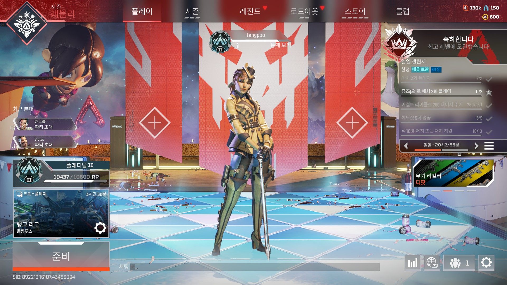

에이펙스는 맵에 따라서 동선을 정해 놨습니다.
갑작스레 적을 만나도 대처 할 수 있는 길만 가다 보니 자연스레 만들어 졌지요.
물론 같은 팀이 주도적으로 핑을 찍으며 선두를 달리면 순응합니다만, 잘못된 루트로 간다면 총한번 못쏴보고 벌판에서 일방적으로 죽으니 자주 투덜 거리기도 하죠.
제 루트를 따라하는 것도 좋지만, 직접 경험하면서 자신만의 루트를 만드는 것도 좋은 경험치가 됩니다. 그 경험치가 확신이 되어 보다 정확한 핑을 통해 팀원과의 합을 올려주니까요.